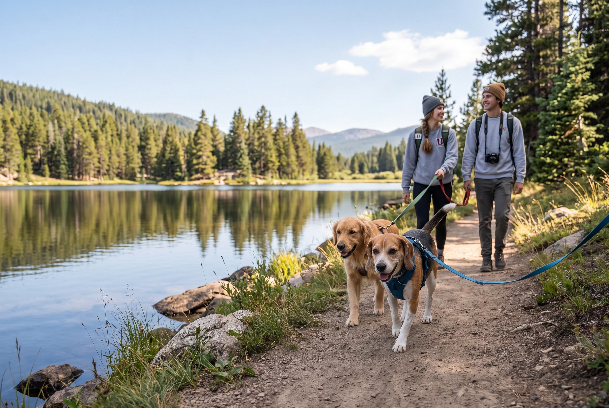
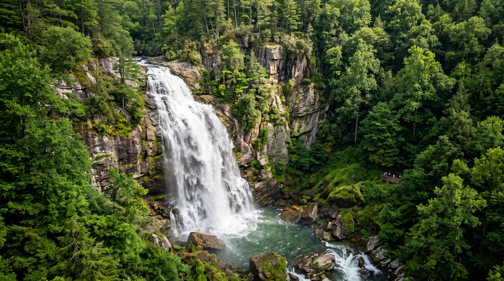

SPCA Dog Hike
Sept 25
View DetailsDitch the Dorm. Find Adventure.

Category: Multi-Day Expedition
Date/Time: – Oct 13, 5:00 PM
Location: Western NC
Spend your Fall Break exploring the most iconic hidden waterfalls across Western North Carolina on this guided multi-day expedition.
This expedition takes you deep into the Appalachian mountains to discover secluded waterfalls. We will set up a base camp and take daily hikes to different falls, ranging from easy walks to strenuous, steep climbs over wet terrain.
Due to the rugged terrain and slippery conditions around the waterfalls, this trip requires good balance and physical mobility. If you require accommodations or want to discuss alternative trips better suited to your needs, please contact the trip leaders in advance.